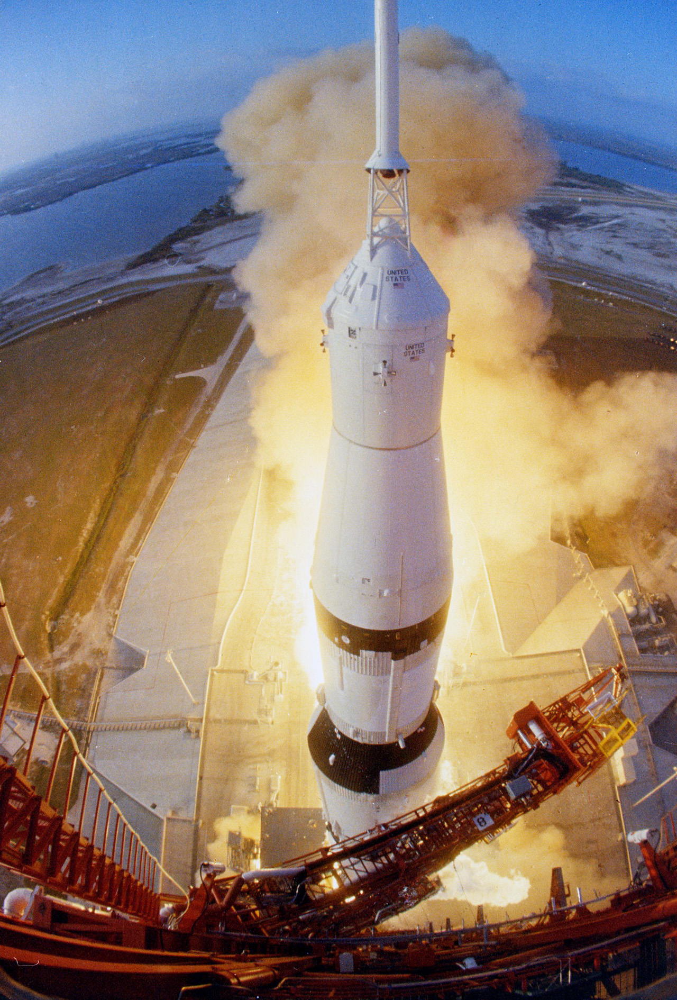

Apollo 6 was the final uncrewed test of the Saturn V rocket before astronauts would fly aboard it. Launched on April 4, 1968, the mission aimed to verify that the rocket and spacecraft were ready for crewed lunar missions.
NASA viewed Apollo 6 as a critical evaluation of the entire Apollo transportation system. Engineers needed to ensure that any remaining problems could be identified and corrected before human lives depended on the rocket's performance.
The mission's primary goal was to conduct another full test of the Saturn V rocket and gather additional performance data. Engineers also wanted to test the spacecraft's ability to simulate a return from the Moon and verify that the heat shield continued to perform as expected.
In addition, NASA hoped to demonstrate the rocket's ability to restart engines during flight, a capability that would be necessary during future lunar missions.
Apollo 6 launched successfully from Kennedy Space Center and initially appeared to be progressing normally. However, as the mission continued, engineers observed several technical problems.
During flight, severe vibrations known as "pogo oscillations" affected parts of the rocket. Two engines in the second stage shut down earlier than planned, creating concerns about the rocket's reliability. Later, an engine restart test in the third stage did not occur as expected.
Despite these difficulties, the spacecraft still reached orbit and completed most of its objectives. NASA engineers carefully analyzed the data collected during the mission to determine the causes of the problems.
Following the mission, engineers discovered that many of the issues were related to fuel system vibrations and engine performance. Detailed investigations identified solutions that could be implemented before astronauts flew on the Saturn V.
The Command Module successfully completed its reentry test, once again proving that the heat shield could withstand the extreme temperatures associated with a return from the Moon.
Although Apollo 6 did not achieve every objective perfectly, the mission provided exactly the type of information NASA needed. Engineers now understood the remaining weaknesses in the rocket and knew how to correct them.
Apollo 6 marked the end of the major uncrewed testing phase of the Apollo program. The lessons learned from the mission led to important improvements in the Saturn V rocket and increased confidence in its reliability.
The successful resolution of the mission's problems convinced NASA that astronauts could safely fly aboard the Saturn V. Only eight months later, Apollo 8 would become the first crewed mission to travel to the Moon, demonstrating how quickly NASA transformed test results into operational success.